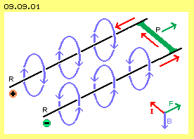
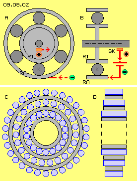
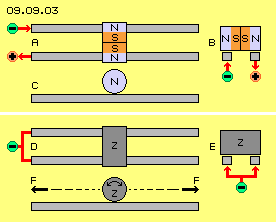
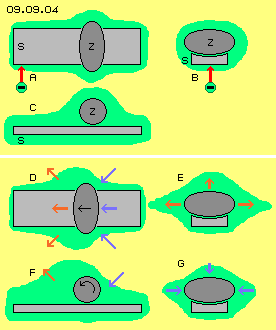
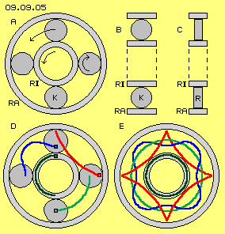
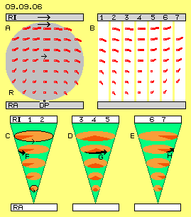
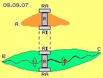
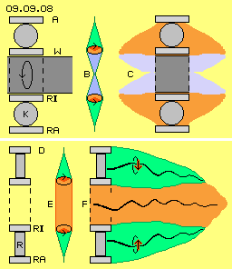
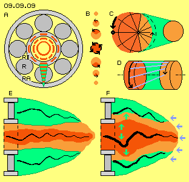

Überschall-Geschoss
In vorigem Kapitel wurde erwähnt, dass Unipolar-Maschinen auch im Sinne von ´Wirbelstrom-Bremsen´ zu betreiben sind und außerordentlich starke Strom-Impulse generieren können. Diese werden z.B. für ´Rail-Guns´ verwendet, um ein Geschoss auf Überschall-Geschwindigkeit zu beschleunigen. Der prinzipielle Aufbau ist in Bild 09.09.01 skizziert. Das Projektil (P, grün) besteht aus elektrisch leitendem Material und rollt bzw. gleitet auf zwei parallelen Schienen (R, schwarz). Ein (viele Ampere starker) Strom wird kurzfristig in eine Schiene eingespeist. Er fließt über das Projektil und über die andere Schiene zurück, wie hier durch die roten Pfeile von Minus nach Plus angezeigt ist. Das Projektil wird in Richtung des grünen Pfeils extrem beschleunigt.

Die übliche Erklärung ist hier ebenfalls skizziert. Um die Schienen ergibt sich ein starkes Magnetfeld, jeweils linksdrehend in Richtung des Stromes, wie durch die blauen Kreis-Pfeile angezeigt ist. Das Projektil stellt praktisch einen stromführenden Leiter dar, der die Magnetfeldlinien rechtwinklig schneidet. Dieser erfährt eine Lorentz-Kraft, wiederum rechtwinklig dazu. Rechts unten ist die bekannte Hand-Regel eingezeichnet (hier bezogen auf die physikalische Richtung des Stromes links/rechts vertauscht). Das Magnetfeld (B, blau) weist nach unten, der Strom (I, rot) fließt durch das Projektil nach links-oben, die resultierende Kraft (F, grün) weist nach rechts-oben.
Man ist sich sehr wohl bewusst, dass diese Erklärung nicht befriedigend ist. Beispielsweise bildet sich auch um das Projektil ein Magnetfeld, ebenfalls linksdrehend, womit es auf seiner Rückseite (links) ebenfalls nach unten weist. Bei einem Fluid würden drei parallele Strömungen gegenseitigen ´Sog´ erzeugen - und analog dazu kann man sich das ´Fließen´ der Magnetfeldlinien vorstellen. Also würde das Projektil zur Stromquelle hin gezogen und nicht abgestoßen. Diese Kanonen funktionieren - obwohl es keine sichere Erkenntnis über die Funktionsweise gibt.
Kugellager-Motor
Wenn diese lineare Beschleunigung funktioniert, muss auch beschleunigte Rotation zu erreichen sein. Diverse Forscher experimentierten darum mit ´Kugellager-Maschinen´, deren generelles Prinzip in Bild 09.09.02 oben-links bei A im Querschnitt und oben-rechts bei B im Längsschnitt skizziert ist. Die vorigen Schienen sind praktisch zu Kreisen gebogen. Am äußeren Ring (RA) wird Spannung angelegt. Über einen Schleifkontakt (SK, hellrot) am inneren Ring (RI) bzw. an der Welle (dunkelgrau) wird der Strom zur Quelle zurück geführt. Zwischen beiden Ringen bilden die umlaufenden Kugeln (K, dunkelgrau) die elektrisch leitende Verbindung. Auch dieser Motor funktioniert, wenngleich dieses Bauprinzip in Lehrbüchern kaum erwähnt wird. Man scheint froh zu sein, dass "der Wirkungsgrad sehr gering ist" und darum kein Bedarf an der Aufklärung des Effektes besteht. Im Gegensatz dazu konnten einige Forscher sehr überraschende Ergebnisse erzielen.
Walter Thurner baute z.B. eine Unipolar-Maschine, wobei der elektrische Kontakt zwischen Stator und Rotor durch umlaufende Kugeln realisiert wurde. Im Prinzip entspricht das voriger Konzeption, allerdings im Bereich der mittigen Scheibe ergänzt um die Magnete einer Unipolar-Maschine. Die Maschine konnte als Generator mit gutem Wirkungsgrad betrieben werden. Allerdings ist die Ableitung des Stromes über rollende Kugeln problematisch, z.B. wegen der auftretenden Hitze. Umgekehrt, wenn Strom in das System eingespeist wurde, arbeitete die Maschine als Motor und beschleunigt auf über 10000 U/min - bis zur Selbst-Zerstörung. Offensichtlich werden dabei im umgebenden Äther enorme Wirbel aufgebaut, die zur Selbst-Beschleunigung führen und kaum mehr zu kontrollieren sind.

Magnet-Maschinen
Starke Verwirbelungen im Äther werden auch erreicht, wenn Permanentmagnete in Rotation versetzt werden. Bekannt sind z.B. die vielfältigen Experimente von John Searl. Die generelle Konzeption ist in diesem Bild 09.09.02 unten skizziert, links bei C schematisch in einem Querschnitt und rechts bei D in einem Längsschnitt. Im Prinzip werden mehrere Ringe (hellgrau) eingesetzt, die stationär oder drehend sein können. Dazwischen sind zylinderförmige ´Läufer´ (blau) angeordnet, die um die Systemachse und um ihre eigene Achse drehen (praktisch an den Ringen abrollen). Alle Bauteile sind als Permanentmagnete ausgeführt, teilweise mehrschichtig mit kompliziertem Aufbau und Polarisierung in unterschiedlichen Richtungen.
Die Berichte über die auftretenden Effekte sind widersprüchlich. Es dürfte aber zutreffen, dass ´Levitation´ auftrat und einige der Searl-Scheiben davon flogen. Möglicherweise konnte Searl die Beschleunigung später kontrollieren. Auf jeden Fall traten elektrische Spannungen und Ströme auf. Es gibt viele Vermutungen zu analogen Erscheinungen bei Ufos. Möglicherweise konnte Searl auch zuverlässige Strom-Generatoren bauen. Insgesamt aber sind die Geschichten um John Searl so verworren, dass sie keine Basis für eine Analyse der entscheidenden Effekte bieten.
Besser dokumentiert sind die Experimente von Wladimir Roschtschin und Sergej Godin. Sie bauten stationäre Rotorsysteme, in etwa analog zu Searl bzw. entsprechend dieser Skizzen. Sie konnten Gewichtsverlust bis zu 35 Prozent messen. Die auftretenden Ätherwirbel erfahren am Boden größeren Widerstand als nach oben. Der unten aufkommende ´Stress´ schiebt das ganze System aufwärts. Auswirkungen dieser Ätherwirbel wurden auch in Nebenräumen und oberen Stockwerken dokumentiert. Eindeutig war auch Selbst-Beschleunigung zu erkennen, so dass Roschtschin/Godin die Drehzahl des Systems vorsichtshalber auf nur 600 U/min begrenzten.
Dieser ´magnetische Energiekonverter´ (MEG) hatte einen Durchmesser von rund 1 m und gab eine Leistung von 7 kW ab. Leider ist auch dieses Gerät zur Nutzung ´Freier Energie´ noch immer nicht frei verfügbar. Vermutlich sind auch hier die Magnete zu komplex angelegt. Generell werden Permanentmagnete bei fortwährender Rotation brüchig. Aufgrund dieser Komplexität können auch diese gut dokumentierten Experimente die wahre Ursache der auftretenden Effekte nicht aufzeigen.
Einfache Rollbahn
Ein Faktum kann aufgrund dieser und anderer Experimente eindeutig festgestellt werden: es finden nicht nur mechanische Bewegungen statt, es sind nicht nur Interaktionen zwischen magnetischen und elektrischen Feldern gegeben, vielmehr muss der entscheidende Effekt durch und in der realen Substanz des umgebenden Äthers auftreten. Zur Analyse der Prozesse muss auf die einfachste Anordnung zurück gegriffen werden. Dazu sind zwei bekannte Experimente schematisch in Bild 09.09.03 dargestellt. Bei A ist eine Sicht von oben, bei B ein Querschnitt und bei C eine Seiten-Ansicht dargestellt. Auf zwei Schienen (hellgrau) liegt ein runder Zylinder, der aus zwei Permanentmagneten besteht. Angeblich funktioniert das Experiment nur, wenn beide Südpole (S, rot) mittig zusammen stoßen und die Nordpole (N, blau) nach außen weisen. Wenn in eine Schiene ein Gleichstrom eingespeist wird, fließt dieser über den Eisen-Zylinder und die andere Schiene zurück zur Stromquelle.
Besonders im Querschnitt B wird deutlich, dass für die Magnetfeldlinien keine klare Rückführung vom Nord- zum Südpol gegeben ist. Die Feldlinien verlassen z.B. den linken Nordpol und können oberhalb wieder in den linken Südpol eintreten, allerdings nur von der Seite her. Symmetrisch dazu erfolgt der Rückfluss am rechten Magneten. Beide Feldlinien treffen sich dann aber gegenläufig an den Südpolen. Der magnetische Rückfluss wird seitlich und besonders unten durch die Schienen und deren Magnetfeld zusätzlich behindert. Wenn dieser Zylinder über die Schienen rollt (und das macht er wirklich), ergeben sich noch komplexere Äther-Verwirbelungen. Damit ergibt auch diese Anordnung noch kein klares Bild von den entscheidenden Äther-Bewegungen.
Rollen in beide Richtungen

Unten in diesem Bild 09.09.03 ist nun eine denkbar einfache Anordnung dargestellt, bei D die Sicht von oben, bei E im Querschnitt und bei F als Seiten-Ansicht. An beiden Schienen (hellgrau) wird Spannung angelegt, wobei ein paar Volt schon ausreichend sind. Ein runder Eisen- (oder Stahl-) Zylinder (Z, dunkelgrau) liegt auf beiden Schienen und stellt damit eine leitende Verbindung dar. Das ganze System ist nur mit dem Minus-Pol einer (Gleich-) Stromquelle verbunden. Es gibt keine Verbindung zu einem Plus-Pol oder zur Erde. Es fließt also kein Strom, vielmehr werden die Schienen und der Zylinder nur ´statisch aufgeladen´. Wenn nun der Zylinder angestoßen wird, rollt er auf den Schienen weiter und beschleunigt selbsttätig. Man kann den Zylinder nach links in Bewegung versetzen oder nach rechts - in beide Richtungen rollt er autonom beschleunigend weiter (siehe Pfeile F). Im Internet kann man dazu lapidare Statements lesen: "ein statisch aufgeladener Rotor weist ein Drehmoment in Richtung seiner Bewegung auf" - eine Erklärung des Warum wird man vergeblich suchen - weil mit konventionellen Vorstellungen nicht möglich.
Dieses Experiment ist nun denkbar einfach und das Ergebnis ´unglaublich´. Auf einem Kongress oder Workshop durfte ich diesen Versuch erleben und auch eigenhändig ausführen. Das erstaunliche Ergebnis blieb mir deutlich in Erinnerung, obwohl ich damals noch nicht mit elektromagnetischen Erscheinungen des Äthers befasst war. Leider weiß ich nicht mehr, wo und wann und wer diesen Versuch vorgeführt hat. Andererseits kann jeder dieses Experiment wiederholen bzw. es müsste zur Grundausstattung jeder Schule gehören. Allen Schülern werden die Regeln und Gesetze des Elektromagnetismus beigebracht, durch Experimente belegt und die Effekte bestmöglich erklärt. Es wird auch darauf hingewiesen, dass diese Erklärungen nur ´gedankliche Modelle für leichteres Verständnis´ sind. An dieser Stelle wäre voriges Experiment angebracht - weil es augenscheinlich aufzeigt, dass die Gedanken-Modelle des üblichen Physik-Verständnisses hier total überfordert sind bzw. wesentliche Aspekte nicht erfassen.
Rundum-Ladungshülle
In Bild 09.09.04 ist oben dieses Experiment noch einmal dargestellt, wiederum mit der Sicht von oben (A), im Querschnitt (B) und der Seitenansicht (C). Da es keinen Stromfluss gibt, ist eine Schiene (S, hellgrau) ausreichend. Am besten geeignet könnte ein runder (Eisen-) Zylinder (Z, dunkelgrau) sein, der in Längsrichtung einen ovalen Querschnitt aufweist. An die elektrisch leitende Schiene wird Spannung angelegt, so dass an ihrer Oberfläche rundum eine elektrische Ladung besteht. Diese statische Ladung wird auch den elektrisch leitenden Zylinder umgeben.
Bei vorigen Kapiteln wurde bereits erkannt, wie weit statische Ladung in den Raum hinaus reicht, wenn man z.B. mit einem Wolltuch an einem PVC-Lineal reibt. Relativ geringe Spannung wird also ausreichen, um diese Anordnung komplett in eine ´Ladungs-Wolke´ einzuhüllen. Die Aura der statischen Ladung ist hier hellgrün markiert. Das Schwingungsmuster statischer Ladung wurde in vorigen Kapiteln z.B. in Bild 09.05.02 dargestellt. Im Prinzip weisen vielfach gewundene Verbindungslinien von der Oberfläche in den Raum hinaus und schwingen synchron zueinander, nach außen in jeweils geringerem Umfang. Der Freie Äther drückt das Bewegungsmuster gegen die Oberfläche, so dass diese Bewegungs-Schicht rund um alle Oberflächen etwa gleiche Höhe aufweist. Über dem Zylinder ergibt sich ein ´Ladungsberg´ und auch seitlich vom Zylinder ragt diese Äther-Bewegung in den Raum hinaus.
Äther versetzt Berge

Bei D wurde der Zylinder leicht angestoßen, so dass er nach links rollt. Diese mechanische Bewegung bewirkt zusätzliche Äther-Bewegung, so dass die Aura um den Zylinder etwas ausgeweitet wird. Im Querschnitt bei E zeigen die grün markierten Bereiche diese Ausdehnung nach oben und an beiden Seiten. Die roten Pfeile weisen in die Richtungen dieser Ausweitung. Obwohl die Bauelemente elektrisch leitend sind, haftet die Ladung ´statisch´ an den Oberflächen (siehe unten). Wenn der Zylinder sich dreht, kommt damit auch seine Ladung in drehende bzw. vorwärts gerichtete Bewegung. Dabei wird der ´Ladungsberg´ des Zylinders über die Ladungsschicht der Schiene geschoben. Im der Seitenansicht ist durch den roten Pfeil F angezeigt, wie vor dem Zylinder der grüne Bereich von Ladungsbewegung aufgetürmt wird.
Das geordnet-weiträumige Bewegungsmuster der Ladung wird durch den rollenden Zylinder ausgeweitet und die Grenzfläche dieser Aura gegenüber dem Freien Äther wird größer. Nach einiger Zeit wächst damit auch die wirksame Fläche für den allgemeinen Ätherdruck. Sobald sich eine ´Schwachstelle´ zeigt, wird er die Ladungsschicht wieder näher an die Oberflächen schieben. An der Hinterseite des rollenden Zylinders wird seine Ladung aus der (bislang flachen) Ladungsschicht über der Schiene heraus gezogen. In diesen Bereich von relativ geringer Ätherbewegung kann nun der Freie Äther hinein drücken, wie durch die blauen Pfeile markiert ist. Vor dem Zylinder findet also eine Ausweitung der Bewegungs-Aura statt (siehe rote Pfeile bei F) und hinter dem davon rollenden Zylinder ist das Volumen involvierten Äthers reduziert (siehe blaue Pfeile bei G). Vorn überschneidet sich das spiralige Schwingen der Ladungen der Schiene und des Zylinders, d.h. beide zusammen reichen weiter in die Umgebung hinaus. Hinten werden beide Bewegungen auseinander gezogen, so dass dort die schwingende Schicht geringer wird.
Strom folgt Spannung
Bei einem Elektro-Generator (bei den üblichen und auch denen voriger Kapitel) wird starke Ladung an einer leitenden Oberfläche aufgetürmt (was ein Potential bildet bzw. Spannung gegenüber Bereichen schwächerer Ladung ergibt). Erst in einem zweiten Schritt wird daraus ein Strom (weil der generelle Ätherdruck die Ladungsschicht überall auf gleiches Niveau zusammen drückt). Die Regel, dass ´Strom der Spannung zeitlich nachfolgt´, ist darum allgemein gültig. Beim 50-Hz-Wechselstrom folgt der Strom z.B. mit einer Verzögerung von 90 Grad der Phase, also rund 0.005 s später.
Im Kapitel ´09.05. Strom´ wurde z.B. mit Bild 09.05.04 dargestellt, wie der allgemeine Ätherdruck den Ladungsberg eines Gleichstroms entlang des Leiters vorwärts schiebt - in etwa mit Lichtgeschwindigkeit und nur geringem Verlust. Hier bei diesem Experiment wird durch die Stromquelle eine einheitliche Ladungsschicht aufgetragen über allen Oberflächen. Durch den Zylinder ergibt sich aber eine Erhebung, also ein ´künstlicher´ Ladungsberg. Im Ruhezustand liegt die Ladung symmetrisch an diesem Hügel. Wenn der Zylinder aber angestoßen wird, ergibt sich eine Asymmetrie und der Freie Äther schiebt diesen Ladungsberg vor sich her, inklusiv des materiellen Zylinders - genau so wie den Ladungshügel aus einem Gleichstrom-Generator. Beim Strom entlang eines runden Leiters bildet die erhöhte Ladung eine ringförmig Erhebung. Hier kann der Zylinder auf der Schiene nur einseitig einen Hügel bilden. Möglicherweise ergeben die hier skizzierten ovalen Querschnitte die beste Wirkung, weil vorn die Ladung nach oben hinaus ´gequetscht´ wird und hinten der Ätherdruck in diese Senke hinein wirken kann.
Hinsichtlich der Geschwindigkeiten gibt es allerdings gravierende Unterschiede. Beim Wechselstrom erfolgt zuerst die Ausweitung der Ladung (der Aufbau von Spannung) und schon 0.005 s später setzt das Zusammen-Drücken ein. Hier muss der Zylinder einen Durchmesser weit rollen, bis die vorn nach außen gedrückte Bewegung hinten wieder zusammen gedrückt wird. Bei 5 cm Durchmesser muss sich der Zylinder z.B. mit 10 m/s vorwärts bewegen, um die Frequenz des Wechselstroms zu erreichen. Solange der Zylinder langsam rollt, kann das Potential des Äthers nur teilweise wirksam werden. Dennoch wird der Zylinder beschleunigt, aber der Äther kann noch viel höhere Frequenzen fahren. Je schneller der Zylinder rollt, desto höher wird vorn der Berg aufgetürmt und desto kräftiger kann der Ätherdruck anschließend den Zylinder vorwärts schieben. Unter optimalen Voraussetzungen wird der Zylinder also nicht nur linear, sondern progressiv beschleunigt. Das soll bei Railguns auftreten und könnte auch in einem rotierenden System möglich sein.
Exkurs: Relative Geschwindigkeit
Die elektromagnetischen Wellen rasen mit Lichtgeschwindigkeit durch den Raum, aus und in allen Richtungen, sich fortwährend überschneidend. Die Bewegungen des Freie Äther sind eine Mixtur aus diesen Überlagerungen. Er ´zittert´ bzw. läuft in ´Knäuelbahnen´ auf engem Raum, immer mit der Geschwindigkeit von rund 300000 km/s. Ein ´materieller Körper´ kann sich nur langsam durch den ortsfesten Äther bewegen, indem die komplexen Wirbel der Atome jeweils in Fahrtrichtung nach vorn weiter gereicht werden. Immerhin fliegt z.B. die Erde mit rund 40 km/s um die Sonne und das ganze Sonnensystem mit bis zu 260 km/s um das galaktische Zentrum. Die Erde bewegt sich als mit rund 300 km/s im Raum - und doch nur 1000 mal langsamer als die internen Ätherbewegungen.
Für unsere Technik bedeutet oft die Schallgrenze ein Maximum, z.B. indem Flugzeuge knapp unter 300 m/s reisen. Wenn ein Rotor einen Umfang von 1 m hat, wird diese Geschwindigkeit am Rand bei 18000 U/min erreicht. Für uns ´technisch machbar´ sind also nur Geschwindigkeiten, die 1000 mal langsamer sind als die Reisegeschwindigkeit der Erde. Wenn sich ein mechanisches Bauteil maximal schnell bewegt, wandern seine Atome 1000000 mal langsamer durch den Äther als sich dieser ohnehin bewegt. Wenn man die ´Knäuelbahnen´ des Äthers als gerade Stecke darstellt, wird z.B. je Zeiteinheit 1 km durchlaufen - und kommt dieses mechanische Bauteil gerade mal 1 mm vorwärts.
Die Erde driftet rein passiv im Äther, vorwärts getrieben durch ein minimales ´Schlagen´ der Whirlpools. Die höchst-möglichen Bewegungen mechanischer Bauteile stellen nochmals kleinere Abweichungen von der normalen Bewegung Freien Äthers dar. Wenn hier in den Bildern eine ´schlagende Komponente´ durch dicke Pfeile markiert wird, bewegt sich der Äther um Millionstel Bruchteile anders als durchschnittlich. Dennoch haben diese Bewegungsmuster der minimalen Abweichungen ´durchschlagend-reale´ Wirkung - aber nur weil der Äther lückenlos ist, sich benachbarte Ätherpunkte adäquat verhalten müssen und jede lokale Abweichung ausgleichende Bewegung im Umfeld zwingend notwendig macht.
Kugellager

Im folgenden soll nun untersucht werden, welche Effekte bei einem rotierenden System auftreten können. In Bild 09.09.05 links oben bei A sind im Querschnitt ein äußerer und ein innerer Ring (RA und RI, hellgrau) dargestellt und einige Kugeln (K, dunkelgrau) dazwischen. Der äußere Ring ist stationär, die Kugeln sind rechtsdrehend um ihre eigene Achse. Sie rollen damit linksdrehend um die Systemachse und schieben den inneren Ring mit doppelter Drehzahl um die Systemachse (siehe Pfeile), so wie es der gängigen Funktion eines Kugellagers entspricht. Oben mittig bei B ist ein entsprechender Längsschnitt skizziert.
Wie beim vorigen Railgun-Effekt kann das System aufgeladen werden. Das Auftürmen der Ladung über den rollenden Kugeln wird hier aber durch den inneren Ring behindert. Wenn mehr als diese vier Kugeln eingesetzt werden, ist auch der Raum dazwischen sehr beengt. Wenn bei einem Kugellager-System eine Selbst-Beschleunigung auftreten sollte, müsste ein anderer Effekt wirksam sein. Dieser wird nicht zwischen den Kugeln statt finden können, wohl aber seitlich davon. Dazu wären flache Scheiben besser geeignet. Im Längsschnitt oben rechts bei C sind darum ´Räder´ (R, dunkelgrau) zwischen dem inneren und äußeren Ring eingesetzt.
Wirre Bahnen
Ein Kugellager ist eine ´runde Sache´. Bei näherer Betrachtung gibt es darin aber keinesfalls nur rundherum kreisende Bewegungen. Unten links bei D sind auf den Rädern einige Masse-Punkte markiert und deren Bahnen eingezeichnet. Ein Punkt im Zentrum des unteren Rades ist hellgrün markiert und dieser bewegt sich tatsächlich auf einer Kreisbahn (hellgrün) um die Systemachse. Ein Punkt am Rand des linken Rades ist rot markiert und dieser ´springt´ beschleunigt nach innen-vorwärts, wird verzögert wieder nach außen geführt und kommt dort für einen kurzen Augenblick fast zum Stillstand. Alle Massepunkte am Rand des Rades ´springen´ auf dieser rot markierten Kurve um die Systemachse (so wie z.B. alle Massepunkte an einem Reifen über einer ebenen Strasse in Bögen vorwärts ´hüpfen´).
Am oberen Rad ist ein Punkt dunkelblau markiert, der sich etwa mittig zwischen Rand und Zentrum befindet. Solche Massepunkte ´schlingern´ auf S-förmigen Bahnen (dunkelblau) um die Systemachse. Nur die Massepunkte auf dem inneren Ring, hier dunkelgrün markiert, drehen auf kreisrunder Bahn (dunkelgrün) mit konstanter Geschwindigkeit um die Systemachse. Sie rotieren mit doppelter Drehzahl der Massepunkte im Zentrum der Räder: die dunkelgrüne Bahn ist 180 Grad lang, während die hellgrüne Bahn nur um 90 Grad dreht. In diesem Bild unten rechts bei E sind diese Bewegungen während eines vollen Umlaufs eingezeichnet. Das sind die Bahnen von nur vier Massepunkten. Die Radien der Räder sind genau ein Viertel vom Radius des äußeren Ringes. Es könnten natürlich viele Räder installiert werden und die Radien müssten keine ganzzahlige Relation aufweisen. Jeder Massepunkt auf jedem Rad beschreibt dann seine eigene Bahn. Anstelle einer ´runden Sache´ bilden solche Kugellager eine wirre Abfolge von Bewegungen.
Klares Muster

Dennoch gibt es ein klares generelles Bewegungsmuster, das in Bild 09.09.06 in einer Seiten-Ansicht bei A dargestellt ist. Zwischen dem äußeren und dem inneren Ring (RA und RI, hellgrau) rollt ein Rad (R, dunkelgrau) nach rechts. Auf diesem Rad sind viele Punkte markiert und durch rote Linien ist angezeigt, wohin sie sich momentan bewegen. Die Länge der Linien zeigt zudem die jeweilige Geschwindigkeit an. Alle Punkte bewegen sich links aufwärts, dann waagerecht und rechts wieder abwärts. Die Steigung ist unten hoch und oben flacher. Die Geschwindigkeit ist oben generell schneller als unten. Alle Punkte bewegen sich momentan so, als würden sie auf einem Bogen um den Auflagepunkt des Rades am äußeren Ring (markiert als Drehpunkt DP) schwingen.
Diese Sicht von außen zeigt die Bewegung des Rades insgesamt. Bei B stellt die weiße Fläche 1 ein ´Fenster´ dar, durch welches nur ein Ausschnitt des dahinter vorbei rollenden Rades sichtbar ist. Zuerst erscheinen dort die Punkte des rechten Randes mit ihren Abwärts-Bewegungen. Zu einem späteren Zeitpunkt 2 werden mehr Punkte sichtbar. Zum Zeitpunkt 3 werden die Bewegungen erkennbar flacher. Zum Zeitpunkt 4 bewegen sich alle Punkte waagerecht nach rechts, oben sehr viel schneller als unten. Bei 5 und 6 weisen die Bewegungen zunehmend steiler nach oben. Bei 7 verlässt der linke Rand des Rades das Sichtfeld. Die Bewegungen beider Hälften des Rades sind also symmetrisch. Das Bewegungsmuster ist aber umgekehrt zu voriger Gesamt-Ansicht bei A.
Dieses ´Fenster´ zeigt also aus der Sicht eines ´ruhenden Beobachters´, wie sich jedes Atom des Rades im jeweiligen Zeitabschnitt bewegt. Genau so erscheint das Rad dem ´ortsfesten´ Freien Äther. Nur die Bewegungsmuster der Atome wandern auf diesen Bahnen im Äther vorwärts. Nur vorübergehend nimmt dieser Bereich deren komplexe Wirbelmuster an. Wenn das Atom den Bereich passiert hat, kehrt der Äther dort zurück in seine normale Bewegung. Von dieser Wanderung der Atome ist direkt also nur der Äther innerhalb dieses Kugellagers tangiert. Der Freie Äther seitlich davon ist nur voriger ´unbeteiligte Zuschauer´.
Resonantes Mit-Schwingen des Freien Äthers
Wenn sich Atome fortgesetzt auf gleicher Bahn bewegen, kehrt der Äther nicht mehr vollständig in seine originäre Bewegung zurück. Die Atome hinterlassen vielmehr eine ´Spur´, hier in Form dieses ´bogenförmigen Schlagens´. Weil aller Äther zusammenhängend ist, wird auch der angrenzende Freie Äther ´resonant´ mit-schwingen, zumindest bei einem klaren Bewegungsmuster. In diesem Bild unten bei C ist ein typischer Kegel skizziert, den eine Verbindungslinie beschreibt. In Höhe des stationären Ringes (RA) wird Freier Äther engräumig ´zittern´. Zum inneren Ring hin werden die mechanischen Bewegungen schneller und auf entsprechend weiteren Bahnen wird auch der seitliche Äther schwingen. Dieser Kegel ist bei D und E noch einmal eingezeichnet.
Die Atome werden immer durch eine schlagende Komponente vorwärts getrieben bzw. umgekehrt wird hier die mechanische Bewegung durch schlagende Komponenten im Äther nach-gezeichnet. Dieses Schlagen ist jeweils durch dunkelrote Sektoren markiert, während die restliche Phase der kreisenden Bewegung hellrot markiert ist. In obigen Zeitpunkten 1 und 2 wird das Schlagen nach unten weisen, wie durch Pfeil F markiert ist. In vorigen Zeitpunkte 3, 4 und 5 weist das Schlagen mehr in die horizontale Richtung, wie durch den Pfeil G angezeigt ist. Bei den Zeitpunkten 6 und 7 muss das Schlagen wieder nach oben weisen, wie durch Pfeil H markiert ist. Die restliche Zeit (im Raum zwischen den Rädern) kann der Äther jeweils wieder langsam zurück schwingen.
Resonantes Mit-Schwingen der Ladung

Wie oben bei den Relationen der Geschwindigkeiten angesprochen wurde, betrifft dieses Mit-Schwingen nur Millionstel der durchschnittlichen Bewegungen des Freien Äthers. Dennoch bedeutet das eine zusätzliche Bewegung, die entsprechende Bereiche ausgleichender Bewegung erfordern. In Bild 09.09.07 bei A ist darum links und rechts von diesem Rad (R, dunkelgrau) eine hellrote ´Aura´ markiert. Diese wird zum schnell drehenden inneren Ring (RI, hellgrau) weiter hinaus reichen als am stationären äußeren Ring (RA, hellgrau). Insgesamt aber wird dabei das Zittern des Freien Äthers nur geringfügig beeinträchtigt.
Das ganze System könnte aufgeladen werden. Das geordnete Schwingen der Ladung reicht sehr viel weiter in den Raum hinaus, wie unten links bei B hellgrün markiert ist. Aller Äther ist dort synchron schwingend, hier angedeutet durch eine spiralige schwarze Verbindungslinie. Dieses Ladungs-Schwingen kann natürlich ebenfalls das zusätzliche Schwingen aus dem abrollenden Rad aufnehmen. In diesen klar geordneten Bewegungen wird das zusätzliche Muster ebenso klar abgebildet sein. Die Aura der kombinierten Schwingungen mit den zusätzlich schlagenden Komponenten wird sehr viel weiter in den Raum hinaus reichen, wie rechts bei C durch die grüne Aura angezeigt ist.
Oben wurde angedeutet, dass Ladung an den Oberflächen ´haftet´. Das ist nur eingeschränkt zutreffend. Nur Magnetfeldlinien müssen genau an ihrem Ursprung an einem Nordpol in den Raum hinaus gehen. Dagegen ist (auch statische) Ladung an Leitern durchaus verschieblich. Wenn hier nun aber diese Ladung das Bewegungsmuster aus dem abrollenden Rad übernimmt, beschreibt die Ladung genau solche zusätzlichen Bewegungen, als wäre sie selbst synchron mit dem materiellen Rad drehend. In diesem Sinne ´haftet´ die Ladung tatsächlich an dem vorwärts rollenden Rad. Dabei wird wiederum nur dieses Bewegungsmuster (inklusiv schlagender Komponenten) im ortsfesten Äther weiter gereicht. Bei einem aufgeladenen System ist somit ein Äther-Volumen involviert, das weit über die materiellen Bauteile des Kugellagers hinaus reicht.
Exkurs: asymmetrische Whirlpools
Im lückenlosen Äther können weiträumige Bewegungen nur zustande kommen durch die Ausweitung von Bahnen. Dabei werden die Radien des Schwingens länger, wobei die Verbindungslinien einen Kegel bilden. In aller Regel ist das Schwingen ungleichförmig durch überlagerte Bewegungen, die zwangsläufig zu einer schlagenden Komponente führen. Durch diese werden z.B. die Wirbelkomplexe ´materieller Partikel´ durch den Ätherraum vorwärts geschoben. Jede Bewegung muss zeitgleich in einem lokalen Bereich ausgeglichen werden. Beim Elektron erfolgt dazu das Schwingen rundum ´zeit-versetzt´, wie z.B. im früheren Kapitel anhand der ´Uhren´ in Bild 09.03.03 dargestellt wurde.
Diese Asymmetrie ist bei Whirlpools jeder Größenordnung unabdingbar, z.B. auch im Sonnensystem. Die Sonne inklusiv ihres Ätherwirbels driftet im galaktischen Wirbel. Darum fliegt die Erde auf einer nicht runden Bahn mit unterschiedlicher Geschwindigkeit um die Sonne. Aus umgekehrter Sicht beschreibt die Sonne die bekannte Analemma-Kurve, wie bei Sonnenuhren deutlich wird. Wenn sich der Mond zwischen der Sonne und der Erde befindet, bleibt er gegenüber der Erde zurück und überholt sie anschließend ´außen-herum´ - weil sich die Whirlpools der Sonne und der Erde überlagern. Jeden Tag laufen geostationäre Satelliten darum etwas voraus und bleiben jede Nacht etwas zurück. Details hierzu sind im Buch ´Etwas in Bewegung´ in Kapitel 08.17. ´Äther-Wirbel der Erde´ dargestellt.
Potential- und starrer Wirbel

Auch die Äther-Bewegungen bei diesem mechanischen Kugellager können nur durch die Ausweitung von Schwingungs-Radien (in Form der kegelförmigen Bahn von Verbindungslinien) und überlagertes Schwingen (hier besonders der Ladung) statt finden. Zudem erzeugen die Bewegungen der Atome eine schlagende Komponente im angrenzenden Äther (oder werden umgekehrt darin driften bzw. vorwärts getrieben). Und alles muss sich rundum adäquat bewegen, so dass sich letztlich alle Bewegungen gegenseitig kompensieren.
In Bild 09.09.08 ist oben wiederum dieses Kugellager dargestellt, bei A und C im Längsschnitt. Innerhalb des inneren Ringes (RI) ist eine Welle (W, dunkelgrau) eingezeichnet (wie es der normalen Funktion eines Kugellagers entspricht). Vom äußeren Ring (RA) über die Kugeln (K) bis zum inneren Ring (RI) ist die Drehgeschwindigkeit ansteigend (wie generell bei einem Potentialwirbel). Umgekehrt bewegen sich die Atome der Welle von außen nach innen langsamer im Raum (wie es einem starren Wirbel entspricht). In diesem Bild oben mittig bei B ist die Ausweitung der Bewegungs-Intensität durch grüne Kegel skizziert. Zum Zentrum werden die Bewegungen langsamer, wie durch die blauen Kegel angezeigt ist.
Diese Bewegungen müssen zum Freien Äther hin ausgeglichen werden. Diese seitliche Aura ist oben rechts bei C schematisch eingezeichnet. Vom stationären äußeren Ring einwärts wird der Ausgleichsbereich immer weiter in den Raum hinaus weisen (rot markiert), vom inneren Ring einwärts ist weniger Ausgleich erforderlich (blau markiert). Das ist das gängige Wirbelmuster aller Whirlpools, z.B. auch der Erde: vom Rand des irdischen Ätherwirbels (Radius etwa eine Million Kilometer) wird die schlagende Komponente immer stärker. Sie schiebt den Mond mit etwa 1 km/s vorwärts. Auf Höhe der geostationären Satelliten ist die Drift etwa 3 km/s schnell. Die ´starre´ Erde verzögert den Wirbel, so dass von der Erdoberfläche einwärts die absolute Geschwindigkeit linear reduziert wird.
Zentral-Wirbel im Kugellager
Wenn innerhalb des Kugellagers kein massiver, starrer Körper die Drehgeschwindigkeit reduziert, ergibt sich eine andere Wirbelstruktur. Unten in diesem Bild bei D ist ein Extremfall skizziert, bei dem der Bereich innerhalb des inneren Ringes (RI) völlig leer ist. Damit besteht keine Notwendigkeit zur Reduktion der Bewegungsintensität im dortigen Äther. Bei E ist durch den roten Bereich angezeigt, dass die Ausweitung und schlagende Komponente im Äther in diesem mittigen Bereich durchgehend bestehen kann.
Im Längsschnitt bei F repräsentieren die grünen Flächen die Bereiche einer Ladung, hier angezeigt durch mehrfach gewundene schwarze Verbindungslinien (hier ist nur die rechte Seite gezeichnet). Die Ladungsschicht ragt seitlich weit hinaus in den Raum. Dieses Schwingen wird nicht exakt an der Innenkante des inneren Ringes enden. Das klare Bewegungsmuster kann sich ungehindert zur Mitte hin ausbreiten, wie durch den roten Bereich markiert ist. Dort bewegt sich der Äther so wie es einer elektrostatischen Ladung entspricht. Als zusätzliche Überlagerung ist dort auch das Bewegungsmuster des ´bogenförmigen Schlagens´ gegeben, die aus den mechanischen Bewegungen des Kugellagers resultiert.
Überhöhte Geschwindigkeit
In Bild 09.09.09 oben links bei A ist ein Querschnitt durch ein Kugellager gezeichnet. Zwischen äußerem und innerem Ring (RA und RI) sind acht Räder (R) angeordnet. Unten in diesem Querschnitt ist durch den grünen Kegel die nach innen ansteigende Bewegungsintensität angezeigt. Die Länge der roten Linien zeigt die Geschwindigkeit bzw. Stärke der schlagenden Komponente. Alle rundum rollenden Räder ergeben dieses ´bogenförmige Schlagen´ im seitlich benachbarten Äther. Am inneren Ring sind die Sektoren des Schlagens rundum eingezeichnet. Diese Bewegung des Äthers entspricht der hohen Drehzahl des inneren Ringes.

Im zentralen Bereich kann sich der Äther adäquat verhalten. Die Sektoren des Schlagens rücken nach innen näher zusammen und bilden im engen Raum des Zentrums letztlich einen geschlossenen Kreis (siehe rote bogenförmige Kurven und mittigen roten Kreis). Im Bild oben mittig bei B ist die Ausweitung der Bewegung durch runde Flächen skizziert. Der äußere Ring ist stationär und die kleine rote Fläche repräsentiert das ´Zittern´ des Freien Äthers. Weiter nach innen wird die Ätherbewegung weiträumiger und es ergibt sich ein Sektor mit rascher Bewegung (der schlagenden Komponente, dunkelrot) und einem Sektor langsamer Bewegung (zum Ausgleich, hellrot). Beim inneren Ring ist der Sektor des Schlagens am größten.
Beschleunigung per Ätherdruck
Wenn nun das dortige Bewegungsmuster sich ungehindert ausbreitet in den mittigen Bereich, schließen sich die schnellen Bewegungen des Schlagens direkt aneinander an, hier markiert durch die dunkelrote Fläche mit vier schwarzen Pfeilen. Der Äther im Zentrum ´dreht´ schneller, weil seine Bewegung sich nur noch aus schlagenden Komponenten zusammen setzt. In diesem Bild unten links im Längsschnitt bei E ist dieser zentrale Bereich ´überhöhter´ Äther-Bewegungen als dunkel-rote Fläche markiert. So kann sich der Äther innerhalb des inneren Ringes verhalten. Seitlich davon ragt die Ladung (hellgrün) weit in den Raum hinaus. In diesem klaren Bewegungsmuster kann sich dieses zusätzliche Schlagen (hellrot) ungehindert nach innen ausbreiten. Im Zentrum wird das Schwingen der Ladung durch das intensive Schlagen (dunkelrot) ergänzt zu einer ´überhöhten´ Frequenz.
Je intensiver dieses ´aufgeladene Ladungs-Schwingen´ wird, desto weiter reicht die Aura seitlich hinaus entlang der Systemachse. Auf die Ausdehung der Oberfläche wirkt der Freie Äther als Gegendruck, wie rechts unten bei F durch die horizontalen blauen Pfeile angezeigt ist. Der generelle Ätherdruck kann in Längsrichtung die Bewegung zusammen drücken, sie ist damit aber nicht zu stoppen. Die intensiven Bewegungen werden nur entsprechend breiter gedrückt, wie durch die vertikalen hellen Pfeile angezeigt ist. Damit wird das zentrale Bewegungsmuster verschoben in die Bereiche des inneren Ringes und der Räder. Dieses Muster aus komprimiertem Schlagen repräsentiert eine höhere Drehzahl. Dem gegenüber weisen die ´materiellen Partikel´ zu langsame Drehung auf. Der Ring und die Räder erfahren zusätzlichen Schub, d.h. sie werden beschleunigt, bis sie dieser höheren Drift-Geschwindigkeit entsprechen. Die damit erhöhte Drehzahl des Kugellagers erfordert eine entsprechend erweiterte Aura zur Seite hin. Der schneller drehende innere Ring zeitigt stärkeres Schlagen. Dieses wird sich ins Zentrum ausweiten und längs der Systemachse wiederum stärker gegen den Freien Äther wirksam. Aus dessen Gegendruck resultiert erneut voriger Beschleunigungs-Prozess.
Normal und katastrophal
In diesem Bild 09.09.09 oben rechts bei C ist schematisch noch einmal skizziert, wie eine Ausweitung der Ätherbewegungen erfolgt. Der rechte hellrote Kreis repräsentiert einen Bereich Freien Äthers. Dort schwirren viele Bewegungen hin und her und kreuz und quer, z.B. resultierend aus der vielfältigen Überlagerung aller sich dort kreuzenden Strahlungen. Diese Bewegungen auf kurzen Bahnabschnitten verlaufen mit Lichtgeschwindigkeit (oder etwas schneller, weil das nur die Signal-Geschwindigkeit ist, das Medium selbst aber schneller sein muss, bei Luft z.B. um etwa den Faktor 1.4).
Diese Bewegungen dieser Fläche weiten sich aus, z.B. wie durch die Fläche links bei C dargestellt ist. Die Ätherpunkte gehen dabei weitere Wege auf etwas gestreckteren Bahnen - aber sie fliegen dabei nicht schneller. Die kurzen Bahnabschnitte des Freien Äthers werden dazu nur etwas ´entwirrt´ (so wie die molekulare Bewegung von Gas-Partikeln zu einer besser geordneten Strömung wird). Die Ätherpunkte bewegen sich mit unveränderter Geschwindigkeit nur auf etwas gestreckteren Bahnen.
In dieser Fläche bei C ist auch eine schlagende Komponente (dunkelrote Sektoren) skizziert. Diese entsteht z.B. zwangsläufig aus der Überlagerung von zwei Kreisbewegungen. Einerseits wird die Bahn gestreckt (und wird schneller durchlaufen), zwingend aber ergibt sich auch eine gestauchter Bahnabschnitt (der langsamer durchlaufen wird). Insgesamt verlaufen alle Bewegungen im Durchschnitt mit der generellen Geschwindigkeit (des Lichtes oder etwas schneller). Obwohl aller Äther ein zusammenhängendes Ganzes bildet, sind also vielfältige lokale Bewegungsmuster möglich. Diese basieren im wesentlichen auf diesen ´kegelförmigen Ausweitungen´ der Bahnen und den ´schlagenden Komponenten´.
In diesem Bild rechts mittig bei D ist eine Situation skizziert, wobei zwei benachbarte Ätherbereiche unterschiedlich schnell drehen. Die blauen Linien zeigen an, wie Verbindungslinien dabei ´verdrallt´ werden. Im lückenlosen Äther bedeutet das Stress bzw. es ist letzlich nicht möglich, dass benachbarte Ätherpunkte aneinander vorbei schrammen. Die Ätherwirbel materieller Partikel können sehr wohl aneinander vorbei fliegen, z.B. wenn zwei Räder nebeneinander mit unterschiedlicher Drehzahl rotieren. Im lücklosen Äther aber müssen benachbarte Ätherpunkte immer direkt benachbart bleiben. Dieser katastrophale Stress kommt auf, wenn im Zentrum dieses Kugellager-Wirbels überhöhte Drehung zustande kommt. Diese Bewegung entspricht dann nicht mehr der durchschnittlichen Geschwindigkeit der Bewegungen im Freien Äther. Dieser Whirlpool weist nicht mehr die notwendige Asymmetrie auf. Es kann praktisch kein Ausgleich mehr zustande kommen. Das Ergebnis ist katastrophal - für solche Kugellager-Maschinen - oder auch einen Stern.
Exkurs: Pulsar
Die Astronomie beschäftigt sich mit 5 % des Universums und klammert 95 % als ´Black-Box´ aus, die ´dunkle Materie oder dunkle Energie´ genannt wird. Es ist ziemlich unseriös, über Millionen Jahr zurück zu rechnen zu einem vermeintlichen ´Big-Bang´, zumal eine universum-weit konstante ´Masse-Anziehungskraft´ unterstellt wird und eine ebenfalls konstante maximale Licht-Geschwindigkeit. Unglaubwürdig erscheinen darum auch Aussagen, dass sich z.B. die dreifache Sonnen-Masse zu einem Neutronen-Stern von 20 km Durchmesser verdichten soll, solche ´Pulsare´ binnen weniger oder gar hundertstel Sekunden eine Umdrehung ausführen sollen, sie zudem ´Jets´ abstrahlen sollen in Richtung ihrer Drehachse, Millionen Kilometer weit - und das auch noch mit Über-Lichtgeschwindigkeit.
Mit vorigen Überlegungen ist das durchaus zu erklären bzw. Pulsare stellen ein gigantisches Beispiel dieses Prozesses dar. Die Gaspartikel eines Sterns werden komprimiert durch den äußeren generellen Ätherdruck (und nicht durch Masse-Anziehung). Die Partikel kollidieren in rascher Folge und bei heftigen Kollisionen kommt es zu voriger ´Verdrallung´ von Verbindungslinien. Diese Stress-Situation kann nur entspannen durch Aussenden einer Strahlung. Diese trifft - mit Lichtgeschwindigkeit - auf benachbarte Partikel, so dass dieser Gasbereich progressiv ´aufgeheizt´ wird. Der Äther kann sich letztlich nur noch durch einen generellen ´Befreiungsschlag´ entspannen: der Stern explodiert in Form einer Supernova.
Dabei werden die äußeren Bereiche des Sterns hinaus geschleudert, manchmal ziemlich konzentrisch rundum, wie dieses Bild 09.09.10 zeigt. Dann wirkt dieser ´Explosions-Gegendruck´ auch konzentrisch einwärts. Die Gaspartikel werden dabei konzentriert oder ihre Wirbelkomplexe können möglicherweise in ein Plasma übergehen. Im schalenförmigen Bereich des Explosions-Herdes existiert weiterhin eine schlagende Komponente, welche der dortigen Rotationsgeschwindigkeit entspricht. Der Radius wird einige hunderttausend Kilometer sein und eine Umdrehung dauert einige Tage. Wenn nun dieses Schlagen durch den einwärts gerichteten Explosionsdruck konzentrisch nach innen verlagert wird, kommt es zu dieser ´überhöhten´ Drehgeschwindigkeit (was der reale Vorgang der theoretischen Konstanz eines mechanischen Drehmoments ist). An einem Radius von wenigen Kilometern können dann mehrere Umdrehungen je Sekunde resultieren. In den Polbereichen herrschen generell geringere Geschwindigkeiten - und durch diese Schwachstellen entlädt sich letztlich der einwärts gerichtete Druck des ´gestressten´ Äthers - mit Über-Lichtgeschwindigkeit.
Kontrolliertes System
Bei einigen Experimenten konnte offensichtlich diese katastrophale Situation maschinell nachgebildet werden. Meist wird von einer schubweisen Selbst-Beschleunigung berichtet. In obigen Darstellungen wurde dieser Prozess vorwiegend aus der elektrostatischen Aufladung des Systems abgeleitet. Analog dazu können auch Systeme auf Basis rotierender Permanentmagnete reagieren. Im Prinzip ist ein anfängliches geordnetes Ätherschwingen erforderlich (hier einer Ladung, dort bestehend aus vielfältigen Magnetfeldlinien), das durch Überlagerungen zusätzlich ´aufgeheizt´ wird (z.B. der Rotation um die Systemachse und zusätzlich um die eigene Achse). Das Pulsieren bzw. Auf-Schaukeln ergibt sich, indem einerseits die Bewegung mechanischer Teile und ´statischer´ Felder den Äther der Umgebung in synchrones Mit-Schwingen versetzen. Andererseits bewirkt das damit verstärkte Schlagen im Äther einen Schub im Drehsinn auf die materiellen Maschinen-Teile.
Basierend auf diesen Erkenntnissen müssten diese Prozesse auch zu kontrollieren sein. Es wird einerseits ein mechanisches Drehmoment erzeugt, d.h. solche Maschinen könnten als Motor arbeiten. Andererseits wird die originäre statische Aufladung durch diese Prozesse verstärkt, so dass eine Maschine auch als Generator arbeiten könnte. Im nächsten Kapitel ´Kugellager-Äther-Maschinen´ sollen Vorschläge für die reale Umsetzung dieses Prinzips erarbeitet werden.